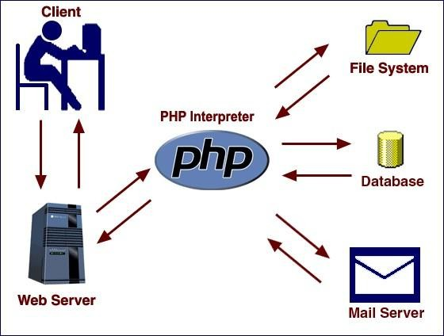

Karnatak University
Dharwad
Janata Shikshana Samiti's
JSS Shri Manjunatheshwara Institute of UG & PG Studies, Vidyagiri, Dharwad - 580004
A PROJECT REPORT ON
Unisex Salon Management System
Submitted in partial fulfillment of the requirements for
Bachelor of Computer Applications (BCA)
of Karnatak University, Dharwad
Project Guided By
Prof. Umesh Ambiger
Submitted By
Vageesh Hiremath
BCA VI Semester, C Division
UUCMS No: U02BF23S0206
Department of Computer Science
Academic Year 2025-2026
This is to certify that Mr. Vageesh Hiremath, student of BCA VI Semester, has satisfactorily completed the project work entitled "Unisex Salon Management System" for the partial fulfillment of the Bachelor of Computer Applications course prescribed by Karnatak University, Dharwad during the academic year 2025-2026.
The project work has been carried out under the guidance of Prof. Umesh Ambiger, Department of Computer Science, JSS Shri Manjunatheshwara Institute of UG & PG Studies, Vidyagiri, Dharwad.
Examiners:
1. ____________________________
2. ____________________________
The successful completion of this project is the result of continuous guidance, encouragement, and support received from the institution, faculty members, and well-wishers. I express my sincere gratitude to JSS Shri Manjunatheshwara Institute of UG & PG Studies, Vidyagiri, Dharwad for providing the opportunity and facilities required to complete this project work.
I am thankful to the Principal and the Head of the Department of Computer Science for their encouragement and academic support throughout the project period. Their motivation helped me understand the practical importance of software development and database management.
I express my heartfelt thanks to my project guide Prof. Umesh Ambiger for his valuable guidance, suggestions, and support during the analysis, design, development, and documentation of the project. His direction helped me complete the project in a systematic and professional manner.
I also thank my classmates, friends, and family members for their constant encouragement and cooperation. Finally, I thank everyone who directly or indirectly helped me in completing the Unisex Salon Management System.
Vageesh Hiremath
I, Mr. Vageesh Hiremath, student of Sixth Semester BCA, Department of Computer Science, JSS Shri Manjunatheshwara Institute of UG & PG Studies, Vidyagiri, Dharwad, affiliated to Karnatak University, Dharwad, hereby declare that the project entitled "Unisex Salon Management System" submitted in partial fulfillment of the course requirement for the award of the degree Bachelor of Computer Applications is my original work.
I further declare that the matter embodied in this project report has not been submitted to any other university or institution for the award of any degree or diploma.
Date: ____________________
Place: Dharwad
Vageesh Hiremath
| S. No. | Title | Page No. |
|---|---|---|
| 1 | Project Synopsis: Introduction, Objectives, Input and Output, Process Logic, Tools and Platforms, Limitations and Scope | 1-6 |
| 2 | Introduction: Languages and Technologies Used in the Project | 7-15 |
| 3 | System Analysis: Existing System and Proposed System | 16-17 |
| 4 | System Design: Software Design, Architecture Design, Logical Design, DFD, Context Model, ER Model | 18-28 |
| 5 | System Development | 29-33 |
| 6 | System Implementation: Database Tables | 34-39 |
| 7 | Sample Output / Forms / Screenshots | 40-45 |
| 8 | Testing: Introduction, Types of Testing, Test Objectives | 46-52 |
| 9 | Limitations | 53 |
| 10 | Future Scope and Enhancement | 54 |
| 11 | Source Code | 55-80 |
| 12 | Bibliography: References, Online Resources, AI Tools Used | 79-80 |
"Unisex Salon Management System"
The Unisex Salon Management System is a web-based software application developed to manage and automate the day-to-day activities of a salon. It provides a digital platform for maintaining customer records, scheduling appointments, managing services and staff, generating bills, tracking payments, collecting feedback, and producing management reports.
The main objective of this project is to replace manual salon record keeping with an organized computerized system. The specific objectives are:
Along with these functional objectives, the project also focuses on improving the overall service experience for both salon staff and customers. A salon receives different types of customers every day, and each customer may request different services such as haircut, beard styling, facial, hair color, spa, or other grooming services. If this information is not maintained properly, the salon may face problems such as repeated manual entries, wrong appointment timings, staff confusion, and delayed billing. Therefore, the system aims to bring discipline and clarity to the complete workflow.
The project also supports academic objectives. It demonstrates the use of database design, server-side programming, form validation, role-based access control, session management, AJAX-based dynamic interaction, and report generation. These concepts are important in real-world web application development because they connect theoretical learning with practical implementation.
| Objective Area | Detailed Purpose | Expected Benefit |
|---|---|---|
| Customer Management | Store customer profile, contact, gender, and address details in one place. | Quick access to customer history and reduced paperwork. |
| Appointment Scheduling | Allow customers or admin to select services, staff, date, and time slot. | Prevents confusion and improves time management. |
| Service Management | Maintain service name, price, duration, category, and status. | Easy price updates and accurate billing. |
| Staff Management | Maintain staff role, availability, specialization, and assigned appointments. | Better staff utilization and clear work allocation. |
| Billing | Generate bill records after completion of appointments. | Reduces manual calculation errors. |
| Reporting | Show appointment, revenue, customer, feedback, and payment details. | Helps admin make better business decisions. |
The system accepts the following inputs:
The system produces the following outputs:
The user first registers or logs in to the system based on role. Customers can browse services and book appointments by selecting service, staff, date, and time. The system checks availability through AJAX before confirming the booking request. Staff members view assigned appointments and update appointment progress. When an appointment is completed, the billing process creates a bill, bill item, and pending payment record. The admin can review appointments, manage services, update payments, view feedback, and generate reports.
The process begins when a customer opens the application and views available salon services. If the customer is new, the customer registers by entering personal details and login credentials. The system validates the entered information and stores it in the customer table. Existing customers can directly log in using their email and password. After login, the customer can select a service category such as male, female, kids, or unisex. The system displays only active services that match the selected category.
During appointment booking, the customer selects the desired service, preferred staff member, appointment date, and time. The system checks whether the chosen slot is already booked or not. If the slot is available, the appointment request is saved with a pending or confirmed status. Staff members can view their assigned appointments and update the status as the work progresses. The appointment may move through statuses such as pending, approved, in-progress, completed, cancelled, or rejected.
When an appointment is marked as completed, the bill generation logic collects the service price and customer details, creates a unique bill number, stores the bill item, and creates a payment entry. The admin can then mark the payment as paid or pending according to actual payment collection at the salon counter. Finally, the customer can view the bill and submit feedback about the service experience.
| Step | Input | Processing | Output |
|---|---|---|---|
| 1. Registration/Login | Email, password, profile details | Validate user and create/access account | User dashboard |
| 2. Service Selection | Category and service choice | Fetch active services from database | Service list with price and duration |
| 3. Appointment Booking | Staff, date, and time | Check availability and save booking | Appointment record |
| 4. Service Execution | Staff status update | Update appointment progress | Current appointment status |
| 5. Billing | Completed appointment | Calculate amount and create bill | Bill receipt and payment record |
| 6. Feedback and Reports | Rating, comment, report filters | Store feedback and summarize records | Feedback list and reports |
| Area | Technology |
|---|---|
| Front End | HTML5, CSS3, JavaScript, AJAX |
| Back End | PHP procedural programming |
| Database | MySQL / phpMyAdmin |
| Server Environment | WAMP or XAMPP localhost server |
| Libraries | Font Awesome, Chart.js, PHPMailer files included for mailing support |
| Operating System | Windows 11 Pro / Windows 10 or later |
| Component | Minimum Requirement |
|---|---|
| Processor | Intel Core i5 or above |
| RAM | 4 GB or above; 16 GB recommended |
| Storage | 256 GB or above; 512 GB recommended |
Yes. The system is designed for a salon business or organization that requires computerized management of customers, appointments, services, staff, billing, and reports.
The duration of the project is two months.
One member: Vageesh Hiremath.
The Unisex Salon Management System helps salons manage daily operations through a computerized system. It stores customer details, schedules appointments, maintains service and price information, manages employee records, generates bills automatically, records manual payments, and supports feedback and reporting. The system reduces manual work, improves accuracy, saves time, and makes information easy to access. It can be expanded in the future to include online payment, SMS alerts, mobile application support, and advanced analytics.
In modern service-based businesses, timely scheduling, customer satisfaction, and accurate billing are important for smooth operations. A salon handles several daily tasks such as customer registration, service selection, staff allocation, appointment booking, billing, and feedback collection. When these activities are performed manually, the process becomes slow and may result in missing records, appointment conflicts, duplicate entries, and billing mistakes.
The Unisex Salon Management System is developed to solve these problems by offering a centralized web application for salon administration. The system allows customers to register, browse services, book appointments, and view bills. Staff members can view assigned work and update appointment status. The admin can manage services, customers, staff, appointments, billing, payments, feedback, and reports from a single dashboard.
The system is designed for a unisex salon, so it supports service categories for male, female, kids, and unisex services. The project uses PHP and MySQL because they are widely used for small and medium web applications, easy to deploy on localhost servers such as WAMP/XAMPP, and suitable for database-driven applications.
A unisex salon generally serves customers of different age groups and genders. Services may be different for each category, and the time required for each service may also vary. For example, a haircut may take less time than hair coloring, and a facial may have a different price from beard styling. A computerized system helps maintain these details accurately. It also helps the salon owner understand which services are most frequently selected, which staff members are occupied, and how much revenue is generated during a particular period.
The project is not only a booking application; it is a complete management system. It connects different activities of the salon into a single workflow. Customer registration is connected with appointment booking, appointment completion is connected with bill generation, and bill generation is connected with payment status. Feedback is also connected with customer satisfaction and service quality improvement. Because of this integration, the admin can manage the salon more efficiently than in a manual system.
The application has been developed with a simple and user-friendly interface so that users with basic computer knowledge can operate it. The admin can use tables, forms, filters, and dashboard summaries to manage data. Customers can perform common actions without needing technical knowledge. Staff members can focus on assigned appointments and update status without accessing unrelated administrative sections.
Manual salon management creates several difficulties when the number of customers and appointments increases. Appointment entries may be written incorrectly, service prices may be miscalculated, and staff availability may not be clearly visible. If a customer asks for previous bill details or appointment history, manual searching takes time. In a busy salon, such delays affect service quality and customer satisfaction.
The Unisex Salon Management System is needed because it provides a structured solution to these problems. It stores information in a database and allows authorized users to access it quickly. It also reduces dependency on paper registers. Since records are stored digitally, reports can be generated more easily and the salon owner can make better decisions regarding services, staff allocation, and revenue planning.
| User Type | Responsibilities | System Access |
|---|---|---|
| Admin | Controls the complete application and manages master records. | Dashboard, services, customers, staff, appointments, bills, payments, feedback, reports, charts. |
| Customer | Uses salon services and books appointments. | Registration, login, service browsing, appointment booking, bill viewing, feedback. |
| Staff | Provides salon services and updates appointment progress. | Assigned appointments, daily schedule, profile, status update. |
HTML stands for HyperText Markup Language. It is used to structure web pages by defining headings, paragraphs, tables, forms, links, and other page elements. In this project, HTML is used to create the layout of login pages, registration forms, dashboards, appointment forms, service pages, and billing views.
<h1>Welcome to Unisex Salon Management System</h1> <form method="post"> <input type="email" name="email" required> <input type="password" name="password" required> <button type="submit">Login</button> </form>
CSS stands for Cascading Style Sheets. It is used to apply colors, spacing, layout, responsive design, fonts, and visual appearance to HTML pages. In this project, CSS files are used for the landing page, dashboards, forms, tables, buttons, badges, and responsive panels.
JavaScript is used to make web pages interactive. AJAX is used to send and receive data from the server without reloading the full page. In this project, AJAX supports customer registration checks, service filtering, available staff loading, time-slot availability checking, appointment booking, search, CAPTCHA refresh, and appointment status updates.
PHP is a server-side scripting language used to process forms, manage sessions, connect with the database, validate data, and generate dynamic pages. In this project, PHP handles authentication, role-based access, appointment booking, bill generation, payment updates, feedback storage, and report generation.

Figure 2.1: PHP web application architecture showing browser, web server, PHP interpreter, database, and file system.
MySQL is a relational database management system used for storing and retrieving structured data. The project database is named unisex_salon_db. It stores details of customers, users, staff, services, appointments, bills, bill items, payments, feedback, login attempts, and settings.
WAMP provides an integrated development environment for Windows, Apache, MySQL, and PHP. It allows the project to run locally through a browser using localhost. It also provides phpMyAdmin for database import and management.
In the existing manual salon system, customer details, appointments, service charges, staff schedules, and billing details are maintained in registers or separate files. This method is time-consuming and requires more paperwork. Appointment conflicts can occur when multiple customers request the same time slot. Searching old records is difficult, and bills must be calculated manually. Manual reporting also takes more time and may not provide an accurate picture of daily revenue or pending payments.
In many small salons, the receptionist or owner maintains a notebook for appointments and another register for customer or billing details. When a customer calls or visits the salon, the available time slot is checked manually. If the register is not updated immediately, the same time slot may be given to another customer. Similarly, if staff availability is not recorded properly, work may be assigned to a staff member who is already occupied.
The existing manual process also makes it difficult to analyze business performance. For example, the owner may want to know which service generated the highest revenue in a month or how many appointments were cancelled. In a manual system, this requires checking many pages and calculating totals manually. This consumes time and may still produce inaccurate results.
The proposed Unisex Salon Management System provides a computerized solution for managing salon operations. It stores all important records in a MySQL database and provides role-based access for admin, staff, and customers. Customers can book appointments online, staff can manage assigned appointments, and the admin can control services, customers, staff, billing, payments, feedback, and reports. The system improves speed, accuracy, data availability, and service quality.
The proposed system automates the main activities of a salon and reduces manual dependency. It stores all records in a structured database so that data can be inserted, updated, searched, and displayed whenever required. The admin can view complete operational information through dashboards and reports. Customers receive a convenient interface for booking services, while staff members receive a clear list of assigned appointments.
The system also improves transparency because appointment statuses and payment statuses are stored clearly. The admin can track whether an appointment is pending, approved, in progress, completed, rejected, or cancelled. Similarly, bills and payments can be reviewed using paid or pending status. This makes salon administration more organized and reduces confusion between customers, staff, and management.
| Existing System | Proposed System |
|---|---|
| Manual records and paperwork | Centralized digital database |
| Manual appointment scheduling | Automated booking with availability checks |
| Manual bill calculation | Automatic bill generation after service completion |
| Difficult to prepare reports | Reports and revenue charts available to admin |
| Higher chance of errors | Validation, status tracking, and structured records |
The software is designed as a web-based database application. The front end contains pages and forms for users to interact with the system. The back end contains PHP scripts that validate input, apply business logic, and communicate with the database. The database layer stores all persistent information in relational tables. The application uses session-based authentication and role checks to restrict access to admin, staff, and customer panels.
The design separates the project into different folders according to responsibility. The admin folder contains files related to administration, such as dashboard, customers, staff, services, appointments, bills, payments, feedback, reports, and revenue charts. The customer folder contains pages for customer dashboard, service browsing, appointment booking, appointment history, bills, profile, and feedback. The staff folder contains pages for assigned appointments, schedule, dashboard, profile, and status updates. This separation makes the project easier to understand and maintain.
Common files are placed in shared folders. The configuration file manages database connectivity and common helper functions. The includes folder contains authentication, header, sidebar, footer, booking, mailer, and bill generation files. The AJAX folder contains server-side scripts that respond to dynamic requests from JavaScript. The assets folder contains CSS, JavaScript, and image files required for the user interface.
| Folder / File | Purpose |
|---|---|
| admin/ | Contains administrator pages for managing the entire salon system. |
| customer/ | Contains customer-facing pages for booking, bills, services, and feedback. |
| staff/ | Contains staff pages for assigned appointments and schedule management. |
| ajax/ | Contains asynchronous request handlers for search, booking, slot checking, registration, and status updates. |
| includes/ | Contains reusable PHP files such as authentication, header, footer, sidebar, and bill generation. |
| config/db.php | Contains database connection and common helper functions. |
| database/salon_db.sql | Contains database schema and sample data. |
| assets/ | Contains CSS, JavaScript, and image resources. |
The system follows a three-layer architecture:
The logical design is based on three main user roles: admin, customer, and staff. Customers perform registration, service browsing, appointment booking, bill viewing, and feedback submission. Staff members manage assigned appointments and update service status. The admin manages all master data, operational data, billing, payments, feedback, and reports.
The system begins with authentication. Admin and staff login details are stored in the users table, while customer login details are stored in the customers table. After successful login, the system stores session values and redirects the user to the correct dashboard. This ensures that a customer cannot access admin pages and staff cannot access unrelated admin features.
The service module acts as a master module because appointments depend on available services. Each service has a price, duration, status, and gender category. The appointment module uses customer, service, staff, date, and time information to create a booking. The bill module depends on completed appointments. The payment module depends on bills. The feedback module can be linked with customer, appointment, staff, and service records.
| Module | Depends On | Provides Data To |
|---|---|---|
| Authentication | customers, users | Dashboards and role-based access |
| Services | Admin input | Appointment booking and billing |
| Appointments | Customers, staff, services | Staff schedule, billing, reports |
| Bills | Completed appointments and services | Payments and customer bill view |
| Payments | Bills and customers | Admin payment reports |
| Feedback | Customers, services, staff, appointments | Admin review and service quality analysis |
A Data Flow Diagram represents the flow of information between external entities, processes, and data stores. In this project, the main external entities are Customer, Staff, and Admin. The main processes are registration/login, appointment booking, service management, appointment handling, billing, payment tracking, feedback, and report generation.
The context model shows the complete system as one process. Customers send registration details, appointment requests, and feedback to the system and receive appointment status, service details, and bills. Staff receive appointment assignments and send status updates. Admin sends service, staff, payment, and report requests and receives dashboards, reports, bills, and feedback details.
The ER model represents the relationship between database entities. Customers book appointments. Appointments are related to services and may be assigned to staff. Completed appointments generate bills. Bills contain bill items and payments. Customers can submit feedback for appointments, services, and staff.
| Relationship | Description |
|---|---|
| Customer to Appointment | One customer can book many appointments. |
| Staff to Appointment | One staff member can handle many appointments. |
| Service to Appointment | One service can be selected in many appointments. |
| Appointment to Bill | One completed appointment can generate one bill. |
| Bill to Bill Items | One bill can contain one or more bill item records. |
| Bill to Payment | One bill can have a related payment record. |
| Customer to Feedback | One customer can submit feedback for completed services. |
The system was developed through requirement analysis, database design, user interface development, backend development, module integration, testing, and documentation. The first step was to identify the main salon operations and convert them into software modules. After that, database tables were created to store customers, staff, services, appointments, bills, payments, and feedback. PHP pages were then developed for each role-based panel.
The project follows a modular development approach. Each major function is implemented in a separate module, such as admin dashboard, customer dashboard, staff dashboard, appointment booking, service management, billing, payment management, and reports. This approach makes the system easier to understand, test, and maintain.
A modular approach is suitable for this project because the system contains multiple users and multiple operations. If all features are placed in a single file, the project becomes difficult to test and update. By keeping separate files and folders, each module can be developed and tested independently. For example, the service module can be updated without disturbing the billing module, and the customer appointment page can be improved without changing the admin reports page.
The development also follows a gradual process. First, the database and basic login system are created. Then the main modules such as service management, customer registration, appointment booking, staff scheduling, and bill generation are added. Finally, reports, charts, feedback, and interface improvements are implemented. This step-by-step method reduces errors and helps identify problems early.
The authentication module controls login, logout, sessions, role checking, CAPTCHA, and login attempt tracking. Passwords are stored using password hashing, which improves security compared to plain text passwords. After login, users are redirected to their respective dashboard according to their role.
The registration module collects customer information such as name, email, phone, gender, date of birth, address, city, and password. It checks for existing email and phone numbers to avoid duplicate accounts. Password strength and confirmation checks help users create safer credentials.
The admin can add new salon services and update existing ones. Each service contains a name, description, price, duration, category, gender category, image, and status. The gender category is useful in a unisex salon because some services are meant for male customers, some for female customers, some for kids, and some for all customers.
The appointment module allows customers to select a service, staff member, date, and time slot. AJAX is used to check available staff and time slots without reloading the page. This improves user experience and reduces the chance of booking unavailable slots.
Staff members can view appointments assigned to them. They can also update appointment status as the work progresses. This gives the admin and customer a clear view of the current stage of the appointment.
The billing module is triggered when an appointment is completed. It creates a bill using the selected service price and appointment details. The generated bill can be viewed by the customer and managed by the admin. This reduces manual calculation and improves billing accuracy.
The current version supports manual payment tracking. The admin can update payment status after collecting payment at the counter. This is useful for salons where payment is made through cash, card machine, UPI, or other offline/independent methods.
Customers can submit feedback after receiving a service. Feedback includes rating and comments. The admin can review feedback to understand customer satisfaction and identify areas for improvement.
The admin can view reports and revenue charts. These reports help monitor appointments, billing, payments, and customer feedback. Chart.js is used to represent revenue data visually, making it easier to understand business performance.
The final system provides an organized digital platform where salon operations can be performed more efficiently. Admin can manage the complete system, customers can book appointments and view bills, and staff can manage assigned services. The system reduces manual work and improves the accuracy of appointment and billing records.
The outcome of the project is a practical and usable salon management web application. It demonstrates how a small or medium salon can shift from manual registers to a computerized system. It also shows how PHP and MySQL can be used to build a role-based application with real operational features such as booking, billing, reports, and feedback.
Implementation planning includes identifying the required software, importing the database, placing the project folder inside the WAMP/XAMPP web root, configuring database credentials, and testing the login credentials. The implementation also includes assigning roles and verifying each module separately.
Before implementation, the hardware and software environment must be prepared. The computer should have a working browser, local server package, PHP support, and MySQL database support. The project files must be placed in the correct web root directory so that Apache can serve the PHP pages. The database file must be imported correctly so that all required tables, relationships, and sample records are available.
Implementation also requires checking configuration values. The database host, username, password, and database name must match the local server setup. In this project, the default configuration uses localhost, root user, empty password, and the database name unisex_salon_db. If the project is moved to another server, these values may need to be changed.
Admin users must be trained to manage services, staff, customers, appointments, bills, payments, feedback, and reports. Staff users must be trained to view assigned appointments and update status. Customers require basic guidance for registration, login, service selection, appointment booking, bill viewing, and feedback submission.
| User | Training Topics | Expected Skill After Training |
|---|---|---|
| Admin | Login, dashboard, service entry, staff management, appointment approval, payment update, report viewing. | Can operate and control the complete salon system. |
| Staff | Login, assigned appointments, daily schedule, status updates, profile update. | Can manage daily service work and appointment progress. |
| Customer | Registration, login, service browsing, appointment booking, bill viewing, feedback submission. | Can independently use customer features. |
After setup, each module is tested using valid and invalid inputs. Registration, login, appointment booking, service management, staff scheduling, billing, payment status, feedback, and reports are tested to ensure that the system behaves correctly.
After successful testing, the system can be deployed on a production server or used on a local salon computer. User credentials should be created, default passwords should be changed, and regular backup procedures should be followed.
Post-implementation support includes fixing issues, updating services and prices, maintaining backups, reviewing feedback, and improving system features based on user requirements.
Support is important because business requirements may change over time. A salon may introduce new services, change prices, hire new staff, or change working hours. The admin must keep service and staff records updated. The database should be backed up regularly to avoid data loss. User feedback should be reviewed to improve both software usability and salon service quality.
The system includes basic security measures that are important for a web-based management application. Passwords are stored using hashing. Login attempts are recorded, and session-based role checking is used to prevent unauthorized access. Input sanitization and prepared query helpers are used in the codebase to reduce the risk of invalid or harmful input.
| Table Name | Purpose | Important Fields |
|---|---|---|
| customers | Stores customer account and profile information. | id, name, email, password, phone, gender, date_of_birth, address, city, status |
| users | Stores admin and staff login users. | id, name, email, password, role, status, phone, address, last_login |
| staff | Stores staff-specific working information. | id, user_id, specialization, availability_start, availability_end, days_working, commission_percentage |
| services | Stores salon service details. | id, name, description, price, duration, category, gender_category, status, image |
| appointments | Stores appointment booking and status details. | id, customer_id, staff_id, service_id, appointment_date, appointment_time, status, notes |
| bills | Stores generated bill records. | id, appointment_id, customer_id, bill_number, bill_date, total_amount, discount, final_amount, status |
| bill_items | Stores services included in each bill. | id, bill_id, service_id, service_name, quantity, price, total |
| payments | Stores manual payment tracking details. | id, bill_id, customer_id, amount, payment_method, payment_date, status, transaction_id |
| feedback | Stores customer feedback and ratings. | id, appointment_id, customer_id, staff_id, service_id, rating, comment, feedback_date, status |
| login_attempts | Stores login attempt records for security. | id, email, ip_address, success, attempted_at |
| settings | Stores configurable system settings. | id, setting_name, setting_value |
This chapter presents the important output screens and forms of the Unisex Salon Management System. The live WAMP services were not available during final PDF preparation, so the following figures are prepared as clean report-ready screen representations based on the actual project modules and page names. They can be replaced with direct browser screenshots later without changing the report structure.
| Figure No. | Screenshot / Form | Description |
|---|---|---|
| 7.1 | Home Page | Shows the salon landing page with services, gallery, reviews, and contact section. |
| 7.2 | Login Page | Shows role-based login with security validation and CAPTCHA. |
| 7.3 | Customer Registration Page | Shows customer registration form with password strength and validation. |
| 7.4 | Admin Dashboard | Shows summary cards, reports, and administrative navigation. |
| 7.5 | Service Management Page | Shows add/edit/delete/filter operations for salon services. |
| 7.6 | Book Appointment Page | Shows customer appointment booking with service, staff, date, and time slot. |
| 7.7 | Staff Assigned Appointments | Shows staff schedule and status update options. |
| 7.8 | Bill View | Shows generated bill with service amount and final amount. |
| 7.9 | Revenue Chart | Shows Chart.js revenue visualization for admin. |
| 7.10 | Feedback Page | Shows customer feedback submission and admin feedback review. |
Login button verifies credentials and redirects Admin, Staff, or Customer to the correct dashboard.
| Customer | Service | Date | Time | Status |
|---|---|---|---|---|
| Alice Brown | Hair Cut | 02-05-2026 | 10:00 AM | Completed |
| Carol Davis | Facial | 03-05-2026 | 02:00 PM | In Progress |
| Bill No. | BILL-2026-0001 | Bill Date | 02-05-2026 |
|---|---|---|---|
| Customer | Carol Davis | Status | Paid |
| Service | Facial | Amount | Rs. 1200.00 |
| Final Amount | Rs. 1200.00 | ||
Testing is performed to ensure that the system meets its requirements and works correctly under different conditions. The Unisex Salon Management System was tested for registration, login, appointment booking, service management, staff assignment, bill generation, payment updates, feedback, and reports.
Testing is an important phase in software development because even a small error can affect the user experience or data accuracy. In a salon management system, incorrect appointment timing, wrong bill amount, or unauthorized access can create serious operational problems. Therefore, each module must be tested carefully using different input values and user roles.
The testing process for this project includes checking form validations, database insertions, database updates, user redirections, session handling, appointment slot availability, bill generation, payment status updates, and report display. Both valid and invalid test cases are used so that the system can handle normal usage as well as incorrect input.
Individual pages and functions such as login validation, customer registration, service insertion, appointment booking, and bill generation are tested separately.
Integration testing verifies whether different modules work together properly. For example, when an appointment is completed, the billing module should create a bill and payment record correctly.
System testing verifies the complete application from login to report generation. It checks whether all role-based panels work together as expected.
Validation testing ensures that required fields, email format, phone number format, password requirements, time-slot availability, and status values are handled correctly.
Black box testing checks the system output based on input without examining internal code. Example: entering invalid login details should display an error message.
White box testing checks internal code paths such as database queries, prepared statements, status update logic, and bill generation conditions.
Acceptance testing verifies whether the system satisfies user requirements for salon management operations.
Figure 8.1: Testing process followed during project verification.
| Test Type | Description |
|---|---|
| Functional Testing | Checks whether each function performs the required task. |
| Usability Testing | Checks whether users can understand and use the forms and dashboards easily. |
| Security Testing | Checks login protection, session handling, password hashing, and role-based access. |
| Database Testing | Checks whether records are inserted, updated, deleted, and retrieved correctly. |
| Compatibility Testing | Checks whether the application runs properly on localhost browsers. |
| Field / Feature | Validation Requirement | Reason |
|---|---|---|
| Name | Should contain valid alphabetic characters and reasonable length. | Prevents invalid customer or staff names. |
| Should follow email format and should not be duplicated. | Used for login and identification. | |
| Password | Should be entered and confirmed correctly. | Protects user account access. |
| Phone | Should contain valid phone characters and should not be duplicated. | Used for customer contact. |
| Appointment Date | Should be selected before booking. | Required for scheduling. |
| Appointment Time | Should be available for selected staff and date. | Prevents duplicate bookings. |
| Service Price | Should be numeric and greater than or equal to zero. | Required for correct billing. |
| Feedback Rating | Should be between 1 and 5. | Maintains meaningful feedback data. |
| Test No. | Test Case | Expected Result | Status |
|---|---|---|---|
| 1 | Leave email and password blank and press Login. | System prompts the user to fill required details. | Pass |
| 2 | Enter valid admin credentials. | Admin dashboard opens successfully. | Pass |
| 3 | Enter invalid username or password. | Error message is displayed and dashboard is not opened. | Pass |
| 4 | Register customer with missing required fields. | System displays validation message. | Pass |
| 5 | Book appointment with valid service, date, and time. | Appointment is stored and shown in customer appointment list. | Pass |
| 6 | Select an unavailable time slot. | System prevents duplicate or unavailable booking. | Pass |
| 7 | Staff updates appointment to completed. | Appointment status changes and bill is generated. | Pass |
| 8 | Admin marks a pending payment as paid. | Payment and bill status are updated. | Pass |
| 9 | Customer submits feedback. | Feedback is saved and visible to admin. | Pass |
| 10 | Admin opens revenue chart. | Chart displays revenue data. | Pass |
| Test No. | Test Case | Expected Result | Status |
|---|---|---|---|
| 11 | Admin adds a new service with valid details. | Service is inserted and shown in service list. | Pass |
| 12 | Admin changes a service status to inactive. | Inactive service is not offered for new bookings. | Pass |
| 13 | Customer filters services by gender category. | Only matching services are displayed. | Pass |
| 14 | Staff opens daily schedule. | Assigned appointments for the selected day are displayed. | Pass |
| 15 | Customer tries to access admin page directly. | Access is denied or user is redirected. | Pass |
| 16 | Admin views feedback list. | Customer ratings and comments are displayed. | Pass |
| 17 | Bill is opened from customer panel. | Printable bill details are displayed correctly. | Pass |
| 18 | Admin opens reports page. | Report data is loaded from database. | Pass |
| 19 | Logout is clicked. | Session is destroyed and login page is displayed. | Pass |
| 20 | Search feature is used in admin list page. | Matching records are displayed dynamically. | Pass |
After testing all main modules, the system produced the expected results. Required field validation, login authentication, role-based access, appointment booking, automatic billing, payment status update, feedback entry, and report display worked as intended. Minor interface and validation issues found during testing were corrected during the debugging phase. The final system is suitable for demonstration and academic project submission.
Every software system has certain limitations depending on the available time, tools, technology, and project scope. The Unisex Salon Management System covers the important operations required for a salon, but some advanced features are not included in the current version. These limitations can be considered for future enhancement.
These limitations do not affect the basic working of the system. The application can still manage customers, services, appointments, staff, bills, payments, feedback, and reports. However, if the salon wants a more advanced commercial solution, features such as payment gateway integration, automated notifications, and mobile app support can be added later.
The project has good future scope because salon businesses are increasingly moving toward digital customer service and online booking. The present system provides the foundation for computerized salon management. Additional features can be developed over this foundation to make the system more powerful, scalable, and user friendly.
Online Payment Integration: Payment gateway integration can allow customers to pay online while booking appointments or after service completion. This can reduce counter payment work and improve convenience.
Notification System: SMS and email alerts can be added for appointment confirmation, reminders, cancellation, payment confirmation, and feedback requests. This will reduce missed appointments and improve communication.
Mobile Application: A mobile app can make booking easier for customers and schedule management easier for staff. Push notifications can also be used for reminders.
Inventory Management: Salons use products such as shampoo, conditioner, hair color, facial kits, creams, and styling materials. Inventory tracking can help the salon know when stock is low.
Membership and Loyalty: Membership plans, loyalty points, referral rewards, and discount coupons can help improve customer retention.
Multi-Branch Support: If the salon expands to more branches, the system can be enhanced to manage branch-wise staff, services, appointments, and revenue reports.
The Unisex Salon Management System successfully provides a computerized solution for the major activities of a salon. It manages customers, staff, services, appointments, bills, payments, feedback, and reports in an organized manner. The system reduces manual work, improves record accuracy, saves time, and supports better decision making through reports and charts.
The project also demonstrates the practical use of HTML, CSS, JavaScript, AJAX, PHP, MySQL, and WAMP server. It follows a role-based structure where admin, staff, and customer users can access only the features required for their responsibilities. Overall, the project satisfies the objective of creating a simple, useful, and expandable salon management application.
This report has been prepared in a formal academic project-report format. It contains the required front pages, certificate, acknowledgement, declaration, contents, synopsis, introduction, system analysis, system design, development, implementation, screenshots/forms, testing, limitations, future scope, source code, and bibliography. The content has been rewritten for the Unisex Salon Management System and does not copy the subject matter of the reference project.
This chapter contains important representative source code from the project. The full project includes separate folders for admin, customer, staff, AJAX handlers, shared includes, configuration, assets, and database files.
<?php
define('DB_HOST', 'localhost');
define('DB_USER', 'root');
define('DB_PASSWORD', '');
define('DB_NAME', 'unisex_salon_db');
$conn = new mysqli(DB_HOST, DB_USER, DB_PASSWORD, DB_NAME);
if ($conn->connect_error) {
die("Connection failed: " . $conn->connect_error);
}
$conn->set_charset("utf8");
?>
function preparedQuery($query, $types = '', $params = []) {
global $conn;
$stmt = $conn->prepare($query);
if (!$stmt) {
throw new Exception('Database prepare failed: ' . $conn->error);
}
if ($types && $params) {
$stmt->bind_param($types, ...$params);
}
if (!$stmt->execute()) {
throw new Exception('Database execute failed: ' . $stmt->error);
}
return $stmt;
}
CREATE TABLE appointments (
id int NOT NULL AUTO_INCREMENT,
customer_id int NOT NULL,
staff_id int DEFAULT NULL,
service_id int NOT NULL,
appointment_date date NOT NULL,
appointment_time time NOT NULL,
status enum('pending','approved','rejected','confirmed','in-progress','completed','cancelled') DEFAULT 'pending',
notes text,
created_at timestamp NULL DEFAULT CURRENT_TIMESTAMP,
updated_at timestamp NULL DEFAULT CURRENT_TIMESTAMP ON UPDATE CURRENT_TIMESTAMP,
PRIMARY KEY (id)
);
CREATE TABLE services (
id int NOT NULL AUTO_INCREMENT,
name varchar(100) NOT NULL,
description text,
price decimal(10,2) NOT NULL,
duration int NOT NULL,
category varchar(50) DEFAULT NULL,
gender_category enum('Male','Female','Kids','Unisex') NOT NULL DEFAULT 'Unisex',
status enum('active','inactive') DEFAULT 'active',
image varchar(255) DEFAULT NULL,
PRIMARY KEY (id)
);
// When appointment status becomes completed, the system creates
// a bill, bill item, and pending payment record for the customer.
$billNumber = 'BILL-' . date('Y') . '-' . str_pad($nextNumber, 4, '0', STR_PAD_LEFT);
$billDate = date('Y-m-d');
$totalAmount = $service['price'];
$finalAmount = $totalAmount;
preparedQuery(
"INSERT INTO bills (appointment_id, customer_id, bill_number, bill_date, total_amount, final_amount, status, notes)
VALUES (?, ?, ?, ?, ?, ?, 'pending', 'Auto-generated after completed appointment')",
"iissdd",
[$appointmentId, $customerId, $billNumber, $billDate, $totalAmount, $finalAmount]
);
// The booking page sends selected service, staff, date, and time
// to an AJAX handler. The handler checks existing appointments
// before allowing the customer to book the selected slot.
SELECT id
FROM appointments
WHERE staff_id = ?
AND appointment_date = ?
AND appointment_time = ?
AND status NOT IN ('cancelled', 'rejected');
unisex_salon_management/ |-- index.php |-- login.php |-- register.php |-- logout.php |-- profile.php |-- config/db.php |-- includes/auth.php |-- includes/generate_bill.php |-- admin/ |-- customer/ |-- staff/ |-- ajax/ |-- assets/css/ |-- assets/js/ |-- database/salon_db.sql
AI assistance was used for improving documentation structure, academic wording, and report formatting. The project logic, source code, database schema, and screenshots should be verified by the student before final submission.